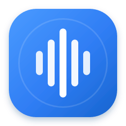

Поддръжка
Преди да започнете
- Използвайте Apple Silicon Mac с macOS 13 или по-нова версия.
- В OpenAI Platform създайте API ключ и добавете API баланс. ChatGPT абонаментът и API таксуването са отделни.
- Разрешете Microphone и Accessibility, когато macOS поиска.
Диктовката не стартира
Отворете Settings, проверете API ключа и тествайте микрофона. В System Settings → Privacy & Security → Accessibility разрешете AIDOO Whisper Lite, след това натиснете „Провери отново“.
Текстът не се поставя
Текстът остава копиран в клипборда. Поставете го с Command–V и проверете Accessibility разрешението.
Грешка от OpenAI
Проверете интернет връзката, валидността на API ключа, наличния API баланс и лимитите. Неуспешното аудио се пази локално и може да бъде изпратено отново.
Диагностичен пакет
В Settings → Diagnostics създайте локален ZIP. Прегледайте го преди споделяне. За сигнал използвайте GitHub Issues и посочете версията на приложението и macOS.